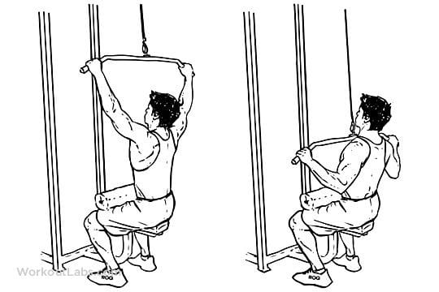
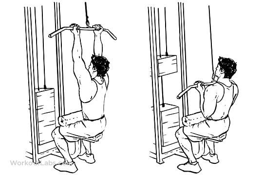
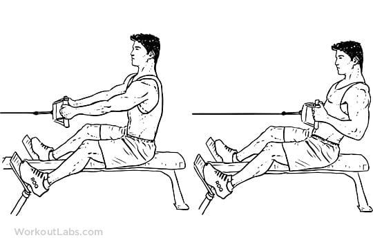
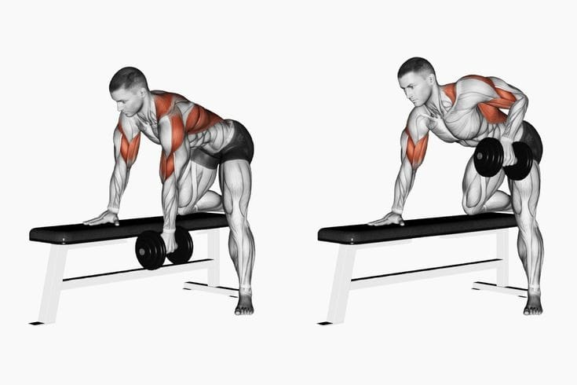
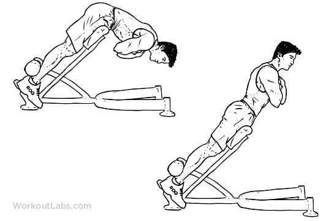

Wide Grip Lat Pull Down

Exhale as you slowly pull the bar down until it touches the upper part of your chest.
Squeeze your shoulder blades together and hold for a count of two.
Inhale as you slowly return the bar to the starting position.
Repeat for the recommended number of repetitions.
Reverse Grip Pull Down

Initiate the movement by depressing the shoulder blades and then flexing the elbow while extending the shoulder. Pull the handle towards your body until the elbows are in line with your torso and then slowly lower the handle back to the starting position under control. Repeat for the desired number of repetitions.
Seated Cable Row

For the seated cable row, begin by using a weight that you can control for 2–3 sets of 6–10 repetitions. Choose a weight that allows you to maintain good technique throughout all sets and repetitions.
Sit on a seated row machine, and place your feet securely on the foot platform. Your whole foot should be on the platform.
Bend your legs without rounding your spine, and grab the cable attachment.
Extend your legs to move back to your starting position, and return to a slightly bent knee position.
Use a neutral grip with your palms facing each other. Rotate your shoulders outward to engage your lats.
Your shoulder blades should be in a neutral or slightly protracted position. Your arms should be long with a slight bend in your elbows. Your posture should be tall with your feet shoulder-width apart and a slight bend in your knees. Your shoulders should be directly over your hips with a neutral head and neck position. Your chin should remain tucked throughout the movement, as if you were holding an egg under your chin. All repetitions should begin from this position.
Squeeze your lats and begin to bend your elbows until your upper arm is even with your body. Your elbows should be at a 45-degree angle. Your shoulder blades should begin to retract as your elbows begin to move backward. Pause for 1–2 seconds.
While maintaining your rowing alignment, allow your shoulder blades to protract, and straighten your elbows.
Your shoulder blades should finish in a protracted position with your arms long with a slight bend in your elbows.
One Arm Dumbbell Row

The most common variation is the single arm dumbbell row (one arm dumbbell row). It involves bending forward at the hip with a weight in one hand, that weight hanging toward the floor. The weight is then pulled upward, closer to the chest, before lowering it back to the starting position.
Hyperextension

Adjust the machine to a 45-degree angle so your hip aligns with or is barely above the cushion pad.
Position yourself on the extension machine.
Your feet should be hip-width apart, and your thighs should be parallel to leg pads.
Step on the platforms and place your thighs on the pads that are a little below your hip.
Your foot should be held in place by the support behind your ankle.
Keep your neck neutral and your spine straight. Your body should be straight, like from your neck to your ankles.
Place your fingers at your temple or cross your arms in front of your chest.
Contract your core muscles and keep your pelvis in a neutral position.
Your neck and head should remain in a neutral position.
Tuck your chin as if holding an egg under it.
Bend your hips until your body is at full extension. This is your starting position.
Inhale, contract your abs, and squeeze your glutes. Begin to pull yourself up using your back muscles.
Come to the top with your body in a straight line. Pause at this position and exhale.
Contract your abs and glutes as you slowly lower yourself to the starting position. This is one rep.
Repeat.